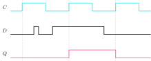

Construction
Why a latch is not enough: in a synchronous loop (next-state logic → latch → next-state logic), while  the latch is transparent; a fast enough logic delivers the new next state before falls and the state changes again. Example: through a wire — with the latch oscillates, with
the latch is transparent; a fast enough logic delivers the new next state before falls and the state changes again. Example: through a wire — with the latch oscillates, with  it stops on an unpredictable value. Narrowing the active pulse below the minimum logic delay works on paper but needs very steep, short pulses on a heavily loaded clock net: big drivers, energy, electromagnetic noise.
Master–slave: master latch (enabled by ) slave latch (enabled by ) .
it stops on an unpredictable value. Narrowing the active pulse below the minimum logic delay works on paper but needs very steep, short pulses on a heavily loaded clock net: big drivers, energy, electromagnetic noise.
Master–slave: master latch (enabled by ) slave latch (enabled by ) .
- : master transparent, follows
 ; slave closed,
; slave closed,  still.
still. - : master closes on the current ; slave opens and copies to .
- : master closed, slave sees a constant input: nothing moves.
There is never a transparent path from to . This one is negative-edge triggered; with the enables swapped it is positive-edge triggered (the usual register; drawn with a triangle on , a bubble for the falling edge).
Sampling semantics (the important part): the value of just before the active edge is found on just after it. Between edges may do anything — even glitch — provided it is stable in the setup/hold window around the edge. Hence the next-state logic only has to settle within one clock period, and combinational hazards do not propagate.
Preset and clear: asynchronous inputs (often active low,  , ) that force or immediately, regardless of the clock — used to start from a known state at power-up.
, ) that force or immediately, regardless of the clock — used to start from a known state at power-up.
Picture

copies the input only at the rising edges of the clock .
Positive-edge flip-flop: at edge 1 (the glitch after it is ignored), at edge 5 , at edge 9 ; changes only at edges.
Example
Same waveform into a D latch (transparent while ): during the high phase 1–3 the glitch at 2–2.4 passes straight to ; the flip-flop above ignores it. That is the practical difference between level and edge sensitivity.
Intuition
A pair of airlock doors: one is always shut, so nothing can run straight through; the data moves one chamber per clock half-period.
Pitfall
"Edge-triggered" does not mean "infinitely fast": violating setup or hold makes the internal loop resolve late and possibly at random (metastability). And the asynchronous clear acts at once, not at the next edge — a common timing-diagram mistake.